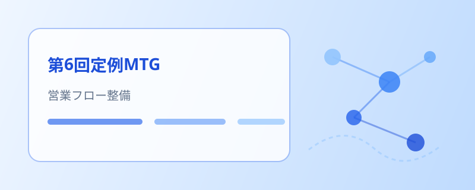

第6回定例MTG — パートナー営業フローの整備と面談強化の展開
前回の振り返りに続き、柱 A・B・C それぞれの進捗を共有。パートナー営業の依頼フロー整備、面談強化シート7か条の展開、新規事業の実行計画について協議しました。
会議の概要
ハイライト
- 柱 A — パートナー営業の依頼フローを整備（マッチング依頼・協力可否の基準・メールテンプレート・スキルシートの提出先）
- 柱 A — 複数メンバーの案件参画が決定。今後数か月の営業見通しを共有（具体数値は社内限定）
- 柱 B — 面談強化シート7か条の大枠が完成し、一部メンバーへ先行展開
- 柱 C — SES マッチングアプリの実行計画を推進し、開発協力を呼びかけ
柱 A — 営業とパートナー連携
柱 A では、今後数か月の営業見通し（具体数値は社内限定）とあわせ、外部パートナーと連携した営業の進め方を共有しました。
- 複数メンバーの案件参画が決定。面談に向けた練習のサポート体制も用意
- パートナー営業の依頼フローを整備 — マッチング依頼、協力可否の基準、メールテンプレート、スキルシートの提出先を明確化
- スキルシートの提出先としてスプレッドシートを準備済み。依頼から実行までを誰でも進められる形に
柱 B — 面談強化シートの展開
柱 B では、大阪メンバー向けの取り組みと、面談力を高めるためのシートの展開状況を共有しました。
- 大阪メンバー向けの社内アンケートを実施中（回答を収集中）
- 面談強化シート7か条の大枠が完成。ブラッシュアップを続けつつ、面談中のメンバーの一部へ先行展開
- 面談は「案件情報のキャッチアップ → 相手が求める点への回答 → 営業との連携」を意識。エンジニア自身が手応えを掴めることを重視
柱 C — 新規事業の進捗
柱 C では、新規事業アイデアの募集状況と、SES マッチングアプリの取り組みを共有しました。
- 新規事業アイデアを隔月で募集（フォームでの回答を継続）
- SES マッチングアプリの実行計画を推進。開発体制を相談し、機能のブラッシュアップと改善案を検討
- 大量のメール処理やデータ量の扱い、表示の最適化、精度向上、UI/UX の改善といった技術課題を共有し、協力を呼びかけ
このあと
パートナー営業フローの定着、社内アンケートの回答収集、面談強化シートの確定、新規事業の実行計画をそれぞれ進めます。 決まったことは、引き続き本サイトでお伝えします。